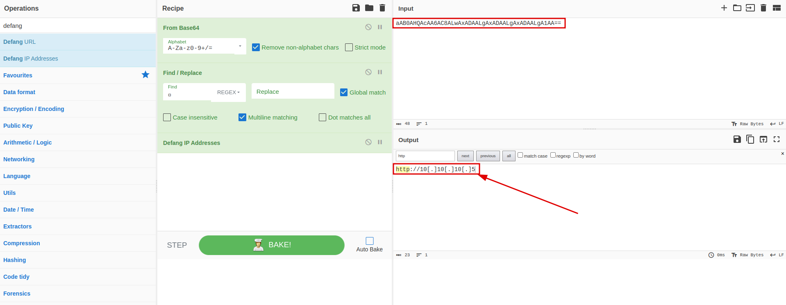

Scenario Notes:
• SOC Analyst Johny noticed anomalous behaviors in Windows machine logs.• Adversary access and backdoor creation detected.
• Logs pulled from suspected hosts, ingested into Splunk for investigation.
• Focus on identifying unauthorized access, privilege escalation, unusual network traffic, and processes.
Objective:
Examine anomalous behaviors in Windows machine logs and identify signs of unauthorized access, potential backdoors, and timely threat detection.Question 1:
How many events were collected and Ingested in the index main?Explanation:
Query the database with “*” to get every single event, and select the preset timestamp “All time”The answer is just bellowAnswer:
12256Question 2:
On one of the infected hosts, the adversary was successful in creating a backdoor user. What is the new username?Explanation:
With a quick Google search we can find that the event id for creating a new user is “ID 4720”With this information we can just go to the selected fields of our splunk and search who were the new users created
 Luckily there was only one user created so we just
have to find his username
Luckily there was only one user created so we just
have to find his username
Answer:
A1bertoQuestion 3:
On the same host, a registry key was also updated regarding the new backdoor user. What is the full path of that registry key?Explanation:
Most efficient way of finding this would be to use the search function. We would need to search for logs with Windows EventID 12, as this indicates created registry keys. Also we can specify which “TargetObject” we are looking for to filter out any other unwanted logs.Answer:
HKLM\SAM\SAM\Domains\Account\Users\Names\A1bertoQuestion 4:
Examine the logs and identify the user that the adversary was trying to impersonate.Explanation:
On this question we could assume that the name the attacker is trying to impersona in Alberto, because he used “A1berto” as his new user, but let's confirm.Just like we assumed, there are only two users “Alberto" and “James”. Is this a 50/50 or a 100/0?Answer:
AlbertoQuestion 5:
What is the command used to add a backdoor user from a remote computer?Explanation:
From the last print in the Question 2 we can see that the subject that created "A1berto" is James. So if we query the database for every event made by him we will see the creation of “A1berto”After looking at Interesting Fields, “CommandLine” has our answerAnswer:
C:\windows\System32\Wbem\WMIC.exe" /node:WORKSTATION6 process call create "net user /add A1berto paw0rd1Question 6:
How many times was the login attempt from the backdoor user observed during the investigation?Explanation:
Let's look for Categories of events and we will find out that out of the 5 events there is 1 Network Connection detectedAfter investigating,thanks to the image field where it specifies that “WMIC.exe” was used, it becomes clear that thi event is the event detected on the creation of the user. Meaning there was no login attempt from the backdoor userAnswer:
0Question 7:
What is the name of the infected host on which suspicious Powershell commands were executed?Explanation:
If we Query the database for only powershell events, and look for the “hostname” field it will on show one host “James.Browne”Answer:
James.BrowneQuestion 8:
PowerShell logging is enabled on this device. How many events were logged for the malicious PowerShell execution?Explanation:
We can find this answer based on the same query. We just need to look into the field “Categories” and find how many events were loggedAnswer:
79Question 9:
An encoded Powershell script from the infected host initiated a web request. What is the full URL?Explanation:
On every powershell event in the Message field the is a huge encrypted message. So we will decrypt it using cyberchef and see what happensAfter using cyberchef and scrolling with little hope, i found this specific block of the codeNow with more hopes i used again cyberchef.After Decrypting and finding/replacing junk. I got the IP Address. Now let's remember that we are not looking for an IP bur for an URL and just after the encoded string we found there is “news.php”. So we just have to got to cyberchef once again and defand the URL to get our answear
Answer:
hxxp[://]10[.]10[.]10[.]5/news[.]phpConclusion:
This investigation successfully uncovered signs of unauthorized access, potential backdoors, and other suspicious activities in Windows machine logs. The proactive analysis conducted by SOC Analyst Johny, coupled with the capabilities of Splunk, enabled the timely detection and understanding of the security incidents, ultimately enhancing the organization's threat detection and response capabilities.1. A total of 12,256 events were collected and ingested in the main index for analysis.
2.The adversary successfully created a backdoor user on one of the infected hosts, and the new username was identified as "A1berto."
3. On the same host, a registry key related to the new backdoor user was updated. The full path of that registry key was found to be "HKLM\SAM\SAM\Domains\Account\Users\Names\A1berto."
4. While examining the logs, it was confirmed that the adversary was trying to impersonate the user "Alberto."
5. The command used by the adversary to add a backdoor user from a remote computer was identified as "C:\windows\System32\Wbem\WMIC.exe" /node:WORKSTATION6 process call create "net user /add A1berto paw0rd1."
6. Although the backdoor user was created, no login attempts were observed from the backdoor user during the investigation.
7. The infected host where suspicious PowerShell commands were executed was identified as "James.Browne."
8. The device had PowerShell logging enabled, and a total of 79 events were logged for the malicious PowerShell execution.
9. An encoded PowerShell script from the infected host initiated a web request. After decrypting the script using CyberChef, the full URL "hxxp[://]10[.]10[.]10[.]5/news[.]php" was defanged due to TryHackMe's request.